Apuntes para la oposición al Cuerpo de Diplomados Comerciales del Estado
3 Teoría de la demanda del consumidor. Axiomas sobre las preferencias, función de utilidad y función de demanda marshalliana. Otros desarrollos.
3.1 Introducción  1'
1'
Todos elegimos qué comprar cada día, casi sin pensarlo. Pero, ¿por qué compramos lo que compramos? En este sentido, la Teoría de la Demanda del consumidor pretende explicar, a través de la función de demanda, el comportamiento del consumidor racional en el mercado, en un contexto competitivo y con información perfecta.
Su objetivo es responder a dos preguntas principales:
¿Qué bienes y que cantidades adquieren los consumidores?
¿Cómo se determinan sus preferencias y qué factores determinan las variaciones en las decisiones de los mismos cuando cambian los parámetros del problema?
Esta teoría se encuadra dentro de la Microeconomía, que estudia el comportamiento de los distintos agentes (consumidores y empresas) cuya interacción en el mercado determina la asignación de los recursos escasos.
Históricamente, la revolución marginalista y su continuación, la Economía Neoclásica, son las primeras escuelas de pensamiento que tratan de encontrar formas de demanda que resuman el concepto del consumidor aplicando el concepto de utilidad1 –cuyo primer antecedente riguroso se remonta a Bernoulli2–, acuñado posteriormente por autores como Bentham y Gossen3.
Las primeras aportaciones proceden del enfoque cardinal de Marshall que, por apoyarse en supuestos excesivamente restrictivos, dará paso al enfoque ordinal, donde la utilidad es medida ordinalmente mediante la introducción del concepto de preferencias a partir de las aportaciones de Pareto, Hicks, Slutsky y Fisher.
Por consiguiente, el objetivo de esta exposición será el análisis de la teoría neoclásica de la demanda del consumidor4 basada en el enfoque ordinal a través del siguiente esquema:
Enfoque cardinal de la teoría neoclásica.
Enfoque ordinal de la teoría neoclásica.
Estática comparativa, para analizar como varía la demanda al variar precios y renta
Condiciones de un sistema de demanda completo.
Demanda de mercado.
3.2 Enfoque cardinal de la teoría neoclásica 1'
Antes de que se impusiera el enfoque ordinal, Marshall desarrolló un enfoque cardinal de la demanda, asentado en una función de utilidad medible, aditiva, separable y cuasilineal respecto al dinero: \[U\left(x_{1},x_{2},M\right)=u\left(x_{1}\right)+u\left(x_{2}\right)+u\left(M\right) \tag{3.1}\] donde la utilidad total del consumidor es simplemente la suma de la utilidad que reporta cada bien y la del dinero no gastado, sin que exista interacción alguna entre ellas –de ahí que se diga aditiva y separable–. Bajo el supuesto de que la utilidad marginal del dinero es constante, resolviendo el problema de maximización se obtiene que el consumidor iguala la utilidad marginal de cada bien a su precio,\(u'\left(x_{i}\right)=p_{i}\), de modo que la demanda de cada bien depende únicamente de su propio precio.
Este enfoque fue superado por resultar excesivamente restrictivo:
Considera los bienes independientes entre sí, impidiendo ver su grado de complementariedad o sustituibilidad.
La utilidad marginal del dinero constante es poco realista5 y, además, elimina el efecto renta y el efecto sustitución cruzado.
Exige un conocimiento excesivo por parte de los consumidores.
Sobre todo, este enfoque utilitarista añade a la cardinalidad –que solo permite comparar diferencias de utilidad para un mismo individuo– el supuesto, distinto y adicional, de comparabilidad interpersonal de utilidades: no basta con que cada individuo pueda ordenar sus propias cestas, sino que haría falta poder afirmar que un mismo euro reporta la misma satisfacción a dos personas distintas, algo que no es observable ni verificable empíricamente y que introduce de matute juicios de valor en lo que debería ser un análisis positivo.
El enfoque ordinal prescindirá por completo de esa exigencia: bastará con que cada individuo sea capaz de ordenar sus propias preferencias, sin necesidad de medir ni comparar la satisfacción entre distintos consumidores –es precisamente ese punto de partida, mucho menos restrictivo, el que se desarrolla a continuación–.
3.3 Enfoque ordinal de la teoría neoclásica 9'
El problema ordinal de teoría de demanda del consumidor se divide en tres partes principalmente:
Determinar el conjunto de consumo.
Determinación de un criterio para evaluar los planes de consumo: preferencias, para una posterior construcción de una Función de Utilidad que se analizará a partir de curvas de indiferencia.
Determinar los planes de consumo a los que puede aspirar un consumidor dada su restricción presupuestaria, completando así el problema de demanda del consumidor. Dado un conjunto de cestas factibles y unos recursos, el consumidor elegirá aquella cesta que mejor se acomode a sus necesidades.
Esta teoría parte de los siguientes supuestos:
Racionalidad del consumidor ya que el consumidor maximiza su utilidad.
Utilidad ordinal, el consumidor puede ordenar las cestas en función del beneficio que le reportan.
Solo ordena las preferencias, nunca mide la utilidad.
Su utilidad depende de la cantidad consumida de cada mercancía.
Además de información perfecta, contexto estático, la decisión de consumo se toma de manera aislada de otras decisiones como ocio o trabajo, se consideran bienes de consumo final.
Conjunto de elección
El enfoque ordinal de la utilidad basa esa comparación en el concepto de preferencias. Solo se exige que los individuos puedan ordenar las distintas cestas de bienes de un conjunto de elección, \(X\), que se supone:
No vacío: Tiene que consumir algo
Acotado inferiormente: por la condición de no negatividad del consumo.
Cerrado inferiormente: los límites pertenecen al conjunto (que el conjunto sea cerrado implica que los límites se incluyen en el mismo. El límite inferior se incluye en el conjunto, el superior hasta que no introduzcamos la restricción presupuestaria no se considera).
Convexo6. Cualquier combinación lineal de cestas que se encuentren en el conjunto también pertenecerán al conjunto.
Además, se supone que la utilidad total depende de las cantidades consumidas: \[u=f\left(x_{1},\ldots,x_{n}\right) \tag{3.2}\]
Preferencias
Para poder establecer una adecuación dentro del conjunto de elección, se introduce la relación binaria “es al menos tan bueno como”, \(\succsim\). Para limitar la discrecionalidad de las preferencias7 y construir una función de utilidad se introducen una serie de axiomas respecto al consumidor:
Axioma 1 Completitud, el consumidor es capaz de comparar cualquier par de cestas:8 para todo \(x,y\in X\) se tiene que \(x\succsim y\) o \(y\succsim x\) o ambas.
Axioma 2 Transitividad, para todo \(x,y,z\in X\), si \(x\succsim y\) e \(y\succsim z\) entonces \(x\succsim z\) , es decir, las preferencias son consistentes
Axioma 3 Reflexividad, una cesta es al menos tan buena como ella misma, \(x\succsim x\) para todo \(x\in X\). Este axioma permite que ninguna cesta quede fuera del orden del consumidor
Estos 3 axiomas conjuntamente aseguran que el comportamiento del consumidor es racional –son los axiomas de racionalidad– y garantizan un preorden completo, es decir, las diferentes cestas admiten relaciones de preferencia o indiferencia, aunque no garantiza la existencia de una función de utilidad. Esto es, son condición necesaria pero no suficiente para la representación mediante una función de utilidad como, por ejemplo, el orden lexicográfico9.
Por ello será necesario incluir los siguientes axiomas de regularidad:
- Axioma 4 Continuidad, no existen saltos en las preferencias. Evita la posibilidad de comportamientos extremistas: garantiza, junto con el pre-orden completo, que las preferencias admitan alguna función de utilidad continua (Teorema de Debreu)10. Matemáticamente, si se prefiere \(x\) a \(y\) sobre una curva de preferencias, las cantidades similares a \(x\) serán también preferidas sobre \(y\), lo que se expresa formalmente como sigue:\(\forall x,y,z\in X\) si \(x\succsim y\succsim z\) entonces \(\exists\lambda\in[0,1]\) tal que \(y\sim\lambda\cdot x+\left(1-\lambda\right)z\).
Además, los siguientes axiomas de deseabilidad limitarán la forma funcional (para darle una forma concreta, deseable a nuestra función)
Axioma 5 Convexidad estricta, hace referencia a la preferencia por la variedad, por lo que los consumidores no se van a los extremos. A medida que disminuye el consumo de un bien va siendo más difícil sustituirlo.
Axioma 6 Monotonía, los individuos prefieren más a menos (“cuanto más mejor”) en cualquier dirección y, como los individuos no se sacian, la función de utilidad será creciente11.
Axioma 7 Diferenciabilidad, la pendiente de la curva de indiferencia es única en todos sus puntos. Las curvas de indiferencia no tienen puntos angulares o “picos” donde no se pueda derivar. Es decir, admite derivadas de primer orden en cualquier dirección, aportando así la suavidad que la mera continuidad no garantiza12.
Estas preferencias son de buen comportamiento13 y por lo tanto la función de utilidad también lo será.
Teorema de Debreu
Si las preferencias de un individuo cumplen los axiomas de completitud, transitividad, reflexividad y continuidad, existe una función de utilidad continua que representa las preferencias. La monotonía no es necesaria para esta existencia –es una propiedad adicional que garantiza que dicha función sea creciente–, pero sí lo es la continuidad, que descarta representaciones como la de las preferencias lexicográficas.
Además, para evitar en el futuro soluciones de esquina, añadimos el supuesto de que la función (preferencias) sea asintótica a los ejes.
La función de utilidad
Por consiguiente, los 7 axiomas anteriores garantizan la representación de las preferencias a través de una función de utilidad, \(u\left(x\right)\), que relaciona cestas de bienes con un índice de utilidad \[u:X\rightarrow\mathbb{R}/x\succsim y\Leftrightarrow u\left(x\right)\geq u\left(y\right) \tag{3.3}\] 14
Propiedades
A su vez, esta función verifica las siguientes propiedades:
Ordenación15, de los vectores de consumo (Axiomas de pre-orden completo 1,2, y 3), mediante una representación numérica de la ordenación de preferencias individual de forma que las que se prefieran tengan un número más alto.
Continua, por serlo las preferencias Axioma 4.
Dos veces diferenciable –un supuesto adicional al Axioma 7, que por sí solo solo garantiza diferenciabilidad de primer orden–, lo que facilita la obtención de la cesta óptima de los agentes y permite aplicar las condiciones de segundo orden, realizar la estática comparativa de la demanda mediante el teorema de la función implícita (de donde se deriva la ecuación de Slutsky), comprobar formalmente la RMS decreciente y calcular elasticidades de sustitución.
Monótona y creciente, por la monotonía de las preferencias (Axioma 6). La derivada de la función respecto a los bienes es positiva siempre, lo cual implica que no hay males.
Estrictamente cuasicóncava16, por la convexidad de las preferencias Axioma 5. Garantiza el cumplimiento de las condiciones de segundo orden en el problema de maximización de utilidad.
Función de utilidad en un plano de 3 dimensiones
Gráficamente, en un plano de utilidad, \(u\), bien \(x\) y bien \(y\) como el de la Figura 3.1 se representan la función de utilidad para las combinaciones de consumo de ambos bienes lo que da lugar a la región de dicha función de utilidad.
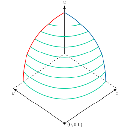
Curvas de indiferencia
Sin embargo, para simplificar la representación gráfica de la función de utilidad en el caso de cestas con dos bienes, se puede realizar en el plano cortes horizontales a la función de utilidad para obtener las curvas de nivel, como se observa en la Figura 3.2, en un plano de \(x\) e \(y\). Estas curvas de nivel son las denominadas curvas de indiferencia, introducidas por Edgeworth (1881) y desarrolladas por Pareto (1906) y Hicks .
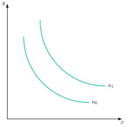
Curvas de indiferencia
Las curvas de indiferencia se definen como el lugar geométrico de combinaciones de bienes –cestas– que proporcionan el mismo nivel de utilidad –son indiferentes entre sí–. Cada curva de indiferencia tiene un nivel de utilidad asociado: \(u\left(x,y\right)=\bar{u}\).
Propiedades
A su vez, las curvas de indiferencia tienen las siguientes propiedades:
Ubicuidad: existen infinitas curvas de indiferencia, lo cual implica que por cualquier espacio del plano pasas una curva de indiferencia.
Las curvas más alejadas del origen significan una mayor utilidad
No intersección: Las curvas de un mismo individuo nunca se cruzan, por la transitividad de las preferencias.. Si lo hicieran, una misma cesta tendría 2 niveles de utilidad, lo cual sería incoherente.
Continuidad, las curvas de indiferencia son continuas por la continuidad de la función de utilidad, reflejando que pequeñas variaciones en bienes no alteran bruscamente las preferencias.
No existe saciedad local –versión más débil de la monotonía del Axioma 6–, es decir, alrededor de una combinación de bienes siempre hay otra combinación de bienes que reporta más satisfacción.
Convexidad, son convexas respecto al origen17. La pendiente de la curva de indiferencia disminuye a medida que descendemos a lo largo de la curva. La forma viene determinado por la convexidad de las preferencias, y provoca que la función de utilidad sea cuasi-cóncava.
Implica el Equilibrio en el consumo y que las combinaciones lineales son preferidas; los agentes preferirán una cesta de mercado equilibrada a otra que contengan mucho de un bien y muy poco del otro.Pendiente negativa (por la propiedad de monotonía18) y decreciente viene representada por la relación marginal de sustitución, \(RMS_{x,y}\). Así, para que un consumidor se desprenda de una cantidad de un bien debe ser compensado con más cantidad del otro.
Relación Marginal de Sustitución, \(RMS\)
indica la tasa a la que el consumidor está dispuesto a sustituir un bien por otro manteniendo constante su nivel de utilidad19 \[RMS_{x,y}=-\left.\dfrac{\partial y}{\partial x}\right|_{\bar{u}}=\dfrac{UMg_{x}}{UMg_{y}} \tag{3.4}\] siendo el grado de convexidad de la curva de indiferencia un indicador de la sustituibilidad entre los bienes, que se mide con la elasticidad de sustitución, \(\sigma\), es decir, la variación porcentual de la proporción en que se consumen los dos bienes ante una variación porcentual de la RMS20 \[\sigma=\dfrac{\partial\left(y/x\right)}{\partial RMS_{x,y}}\cdot\dfrac{RMS_{x,y}}{y/x} \tag{3.5}\] obteniendo diferentes curvas de indiferencia21 como se observa en la Figura 3.3, de esta forma:
Para bienes perfectamente sustitutivos la \(RMS\) es constante. Matemáticamente, \(\sigma=\infty\)22 y la curva de indiferencia sería líneal. Ejemplos de este tipo de bienes son pepsi y coca-cola, café y te o azúcar y sacarina.
Para bienes complementarios perfectos –aquellos en los que el aumento en la cantidad consumida de un bien solo aumenta la utilidad si se acompaña del aumento en la cantidad consumida del otro– la RMS no está definida23, dando lugar una función de utilidad tipo Leontief en forma de L con \(\sigma=0\). Ejemplos de bienes son zapatos del pie izquierdo y zapatos del pie derecho, brocas y taladros, raquetas y pelotas de tenis o tornillos y tacos.
Entre estos dos casos extremos se encontrarían las curvas de indiferencia con \(RMS\) decreciente, es decir, bienes con sustituibilidad limitada. Un ejemplo sería la función de utilidad tipo Cobb-Douglas, con \(\sigma=1\).
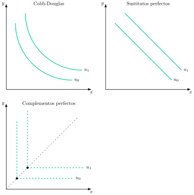
Restricción presupuestaria
Por otro lado, el consumidor se enfrenta al problema de la escasez que se puede abordar desde 2 puntos de vista:
Restricción física del gasto de elección.
Restricción económica de la renta.
Se analizará la restricción de renta suponiendo mercados completos –los precios de los bienes son positivos y conocidos por todos los consumidores – y agentes precio aceptantes, por lo que la restricción presupuestaria para 2 bienes a una renta, \(m\), dada será \[p_{x}\cdot x+p_{y}\cdot y\leq m \tag{3.6}\] donde \(p_{x}\) y \(p_{y}\) son los precios de los bienes \(x\) e \(y\) respectivamente.
Propiedades
A su vez, el conjunto presupuestario posee las siguientes propiedades:
Acotado, por arriba por la restricción presupuestaria y por abajo por la no negatividad del consumo de los bienes.
Convexo, cualquier combinación linear de 2 puntos pertenecientes al conjunto pertenece también al mismo.
Cerrado, cualquier combinación de bienes sobre la recta o sobre los ejes es asequible, incluye extremos.
No vacío, con una renta positiva y al menos el precio de un bien finito, el consumidor podrá consumir una cantidad positiva de al menos un bien.
Recta de balance
Gráficamente, en un plano bien \(x\) y bien \(y\) como el de la Figura 3.4 se representa la recta de balance cuya pendiente viene determinada por la ratio de precios, \(-\frac{p_{x}}{p_{y}}\), y representa el coste de oportunidad de un bien en términos del otro24, la cual refleja la tasa de cambio entre los dos bienes en el mercado, es decir, tasa objetiva25.
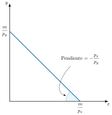
Equilibrio del consumidor
Por consiguiente, el problema de maximización al que se enfrenta el consumidor es el siguiente \[\max\quad u\left(x,y\right) \tag{3.7}\] sujeto a \[p_{x}\cdot x+p_{y}\cdot y\leq m \tag{3.8}\]
El problema se puede resolver a través del método de Lagrange, obteniéndose la siguiente condición de primer orden, CPO2627: \[\dfrac{UMg_{x_{i}}}{p_{i}}=\lambda,\quad\forall i \tag{3.9}\] o lo que es lo mismo
\[RMS_{x,y}=\dfrac{UMg_{x}}{UMg_{y}}=\dfrac{p_{x}}{p_{y}} \tag{3.10}\] la cual implica que la relación marginal de sustitución se iguale a la ratio de precios, es decir, la tasa subjetiva a la que el consumidor está dispuesto a sustituir un bien por otro es igual a coste de oportunidad de un bien en términos de otro (tasa objetiva del mercado)2829.
Equilibrio
Gráficamente, en un plano de bien \(x\) y bien \(y\) como el de la Figura 3.5, se determina así un punto de equilibrio que viene dado por el punto de tangencia entre la curva de indiferencia y la restricción presupuestaria, es decir, donde se igualan sus pendientes.
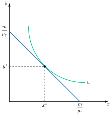
Demanda ordinaria o marshalliana
A partir de la condición de equilibrio es posible obtener las funciones de demanda del consumidor para cada uno de los bienes que dependen de los precios y de la renta: \(x=x\left(p,m\right)\). Estas funciones de demanda, obtenidas del problema de maximización de la utilidad, se denominan ordinarias o marshallianas, \(x\left(p,m\right)\) y tienen las siguientes propiedades:
Es continua para todo vector de precios y renta positivos.
Habitualmente decreciente respecto al precio propio y creciente respecto a la renta –para bienes normales sin efecto Giffen–, aunque esta propiedad no es universal: el apartado de Estática comparativa desarrolla las excepciones (bienes inferiores, bienes Giffen).
Homogénea de grado cero en precios y renta (el consumidor se guía por los precios relativos. Implica ausencia de ilusión monetaria, lo que permite prescindir de la referencia del dinero)
Cumple con la ley de Walras: gasta toda su renta.
Diferenciable, con carácter general, lo que permite aplicar el análisis de estática comparativa que se desarrolla a continuación.
Única si las curvas de indiferencia son estrictamente convexas.
A partir de la agregación horizontal de las demandas individuales –sumando, a cada precio, la cantidad demandada por cada consumidor dada su renta– siempre es posible obtener la curva de demanda de mercado, sin más condición que la de que los agentes sean precio aceptantes y sus demandas no estén interrelacionadas. Ahora bien, esa demanda agregada dependerá en general de cómo esté repartida la renta entre los consumidores. Solo si, además, la demanda depende de la renta total y no de su distribución (condición de Gorman30) podrá expresarse la demanda de mercado como función únicamente de la renta agregada, con independencia del reparto.
3.4 Estática comparativa 6'
Una vez que hemos identificado la demanda marshalliana, podemos preguntarnos cómo se ve afectada ésta por cambios en las variables que la determinan: renta, precio propio y precios de otros bienes. Es decir, un vez hemos respondido a la pregunta de ¿qué bienes y qué cantidades consumirá el consumidor?, tratamos de responder a la pregunta de ¿Cómo varía la decisión adoptada por el consumidor cuando varían los parámetros del problema?31
Variaciones en los precios
Comenzando con variaciones en los precios, gráficamente, en un plano de bien \(x\) y bien \(y\) como el de la Figura 3.6
Se representa la restricción presupuestaria y la curva de indiferencia tangente a la misma dando lugar al equilibrio en A.
Se supone una disminución del precio del bien \(x\), por lo que la recta presupuestaria pivota sobre el eje \(y\) expandiendo el conjunto presupuestario y permitiendo al consumidor alcanzar una curva de indiferencia más alejada del origen que le reportará más utilidad.
En el nuevo equilibrio \(B\) el consumidor adquiere una mayor cantidad de ambos bienes. Esto implicaría que, en principio, parece que se cumple la condición de negatividad (que veremos más adelante), y en un plano adyacente de precio de bien \(x\), \(p_{x}\), y cantidad de \(x\), la demanda tiene pendiente negativa, es decir, al disminuir el precio de un bien, aumenta su consumo.
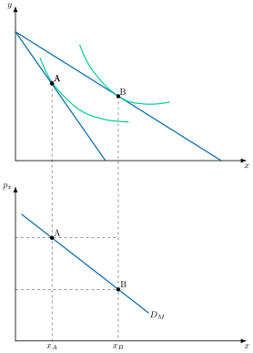
No obstante, es necesario analizar con detalle la variación del precio, ya que la variación de la cantidad demandada ante un cambio en los precios es el resultado de la interacción de dos efectos:
Efecto sustitución: es el cambio en la cantidad demandada que se produce porque el bien se ha vuelto más barato o más caro en comparación con los demás, dejando al margen que el consumidor sea ahora más rico o más pobre, es decir, manteniendo constante su renta real.32
Efecto renta: es el cambio en la cantidad demandada que se produce porque, con la misma renta monetaria, el consumidor puede comprar más si el precio baja, o menos si sube, es decir, porque ha variado su renta real.33
ES y ER: visiones de Slutsky y Hicks
A su vez, para analizar el efecto sustitución es necesario definir el concepto de renta real constante, existiendo dos criterios de compensación que reparten el mismo efecto total en un punto intermedio distinto:
Slutsky, ante una variación de precios, la renta real constante es aquella que permite adquirir la cesta anterior a nuevos precios, es decir, el consumidor se sitúa sobre la misma restricción presupuestaria.
Hicks, ante una variación de precios, la renta real constante es aquella que permite alcanzar la misma utilidad anterior a nuevos precios, es decir, el consumidor se sitúa sobre la misma curva de indiferencia.
Gráficamente, como se observa en la Figura 3.7, ante una reducción del precio de \(x\) el efecto total es el paso de A a B en ambos casos, pero el punto intermedio difiere:
Slutsky traslada paralelamente la nueva restricción presupuestaria hasta que roce la cesta inicial A, dando el punto S (\(\text{ES}_{\text{S}}=A\to S\),\(\text{ER}_{\text{S}}=S\to B\)). Trasladando este punto –igual que se hizo antes con A y B para obtener la curva de demanda ordinaria– a un plano de precio y cantidad de \(x\), se obtiene la demanda compensada de Slutsky,\(D_{S}\).
Hicks traslada la nueva restricción hasta que sea tangente a la curva de indiferencia inicial, dando el punto H (\(\text{ES}_{\text{H}}=A\to H\),\(\text{ER}_{\text{H}}=H\to B\)). De la misma forma, trasladando H se obtiene la demanda compensada o hicksiana,\(D_{H}\).
Para un cambio de precio discreto, S y H son en general distintos; solo coinciden en el límite de una variación infinitesimal, el caso que recoge la ecuación de Slutsky.
Con el método de Hicks se descomponen los dos efectos: la demanda hicksiana recoge exclusivamente el efecto sustitución –no depende de la renta–, y el efecto renta se obtiene por diferencia respecto al efecto total.
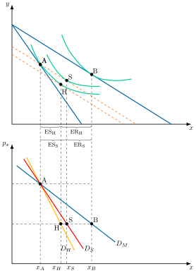
Ecuación de Slutsky
Analíticamente, el efecto renta y el efecto sustitución se relacionan a través de la ecuación de Slutsky, que establece que la variación de la cantidad demanda al variar el precio, es decir el efecto total, es igual a la suma del efecto sustitución –dado por término que representa la variación de la demanda al variar el precio manteniendo constante la renta real– más el efecto renta –dado por el término que representa la variación de la demanda al variar la renta– \[\underbrace{\dfrac{\partial x\left(p,m\right)}{\partial p_{x}}}_{\text{Efecto total}}=\underbrace{\dfrac{\partial h_{x}\left(p,u\right)}{\partial p_{x}}}_{\text{Efecto sustituci{ó}n}}\underbrace{-\dfrac{\partial x\left(p,m\right)}{\partial m}\cdot x\left(p,m\right)}_{\text{Efecto renta}} \tag{3.11}\]
Tipos de bienes
Además, a partir del signo y la magnitud del efecto renta y del efecto sustitución es posible caracterizar los bienes y la pendiente de la función de demanda. Concretamente, ante un aumento del precio de un bien:
El efecto sustitución propio es negativo, por la convexidad de las preferencias34.
El efecto renta puede ser:
Negativo: se trata de un bien normal, al reducirse la renta se reduce el consumo. En este caso, la demanda tendrá pendiente negativa, puesto que el efecto sustitución y el efecto renta son negativos.
Positivo: se trata de un bien inferior, al aumentar (reducirse) la renta, se reduce (aumenta) su consumo. Existe dos posibilidades, ante el cambio del precio:
Elasticidad
Por otro lado, una medida para establecer la sensibilidad de la demanda es la de elasticidad, distinguiendo entre
Elasticidad precio de la demanda de un bien, que es la variación porcentual de la cantidad demandada de un bien ante una variación porcentual de su precio \[\varepsilon_{P}=\dfrac{\partial x}{\partial p_{x}}\cdot\dfrac{p_{x}}{x} \tag{3.12}\] y dependiendo de su valor
Si \(\left|\varepsilon_{P}\right|>1\) la demanda es elástica, es decir, muy sensible al precio. Viajes aéreos, coches de lujo, comidas en restaurantes, y la mayoría de los productos de marca con sustitutos fáciles.
Si \(\left|\varepsilon_{P}\right|=1\) elasticidad unitaria, una variación porcentual del precio provoca una variación porcentual igual, y de signo contrario, en la cantidad demandada, de modo que el gasto en el bien no cambia.
Si \(\left|\varepsilon_{P}\right|<1\) la demanda es inelástica, es decir, poco sensible al precio. Ejemplos: Medicamentos vitales (como la insulina), la gasolina a corto plazo, la sal, y los servicios de agua y electricidad.
Elasticidad precio cruzada, que es la variación porcentual de la demanda de un bien ante cambios en el precio de otro bien \[\varepsilon_{C}=\dfrac{\partial y}{\partial p_{x}}\cdot\dfrac{p_{x}}{y} \tag{3.13}\] y dependiendo de su valor
Si \(\varepsilon_{C}>0\) los bienes son sustitutivos brutos. Ejemplos: Coca-Cola y Pepsi, mantequilla y margarina, el té y el café.
Si \(\varepsilon_{C}=0\) , los bienes son independientes. Ejemplos: El precio de una bicicleta no afecta la demanda de leche. Un ordenador y una caja de galletas.
Si \(\varepsilon_{C}<0\) los bienes son complementarios. Ejemplos: Automóviles y gasolina, consolas de videojuegos y videojuegos, palomitas de maíz y entradas de cine.
Variaciones de la renta monetaria
Por otro lado, ante un aumento en la renta, gráficamente en un plano de bien \(x\) e \(y\) como el de la Figura 3.8 la recta de balance se desplazará paralelamente, pues se mantiene constante la relación entre los precios. Las combinaciones de óptimas de bienes al variar la renta manteniendo los precios constantes representan la curva de renta-consumo, \(CRC\).
Curva de Engel
Derivada de la curva de renta-consumo se obtiene la curva de Engel, que relaciona el nivel de renta con la cantidad comprada de un bien. Además, esta relación permite distinguir entre un bien normal y un bien inferior: \[\begin{aligned} \text{Si } & {\dfrac{\partial x\left(p,m\right)}{\partial m}\geq0} \text{ es un bien normal}\\ \text{Si } & {{\dfrac{\partial x\left(p,m\right)}{\partial m}<0} } \text{ es un bien inferior} \end{aligned} \tag{3.14}\]
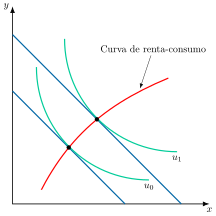
Dentro de los bienes normales se encuentran:
Los de primera necesidad, cuyo consumo aumenta en menor proporción que la renta, y
Los de lujo, cuyo consumo aumenta en mayor proporción que las variaciones de renta.
Bajo el supuesto de monotonicidad, no todos los bienes de una economía pueden ser inferiores. Además, un bien puede ser inferior a partir de un determinado nivel de renta.
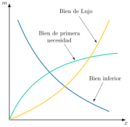
En términos porcentuales se puede expresar la relación entre un bien y la renta mediante el concepto de elasticidad-renta: \[\varepsilon_{x,M}=\dfrac{\partial x\left(p,m\right)}{\partial m}\cdot\dfrac{m}{x}=\begin{cases} \text{Bien normal} & \text{si }\quad\varepsilon_{x,M}\geq0\\ \text{Bien de primera necesidad} & \text{si }\quad0<\varepsilon_{x,M}<1\\ \text{Bien de lujo} & \text{si }\quad\varepsilon_{x,M}>1\\ \text{Bien inferior} & \text{si }\quad\varepsilon_{x,M}<0 \end{cases} \tag{3.15}\]
Preferencias homotéticas
Las preferencias son homotéticas cuando la RMS depende solo de la proporción en que se consumen los bienes y no de la cantidad total consumida.37 En ese caso, todos los bienes tienen elasticidad renta igual a uno y la curva de renta-consumo es una recta que pasa por el origen.
3.5 Condiciones de un sistema de demanda completo 1'30"
Con todo lo visto hasta el momento, un sistema completo de demanda debe cumplir:
Condición de agregación de Engel, establece que la suma de las elasticidades renta de todos los bienes, ponderadas por su participación en el gasto total, debe ser igual a uno: \[\sum\limits_{i=1}^{n}s_{i}\cdot\varepsilon_{i,m}=1 \tag{3.16}\] Esto implica que no todos los bienes pueden ser ni inferiores ni neutros, es decir, el consumidor tiene que consumir algún bien normal. En consecuencia, si se incrementa la renta, el exceso de la misma deberá ser gastado de acuerdo con sus elasticidades renta, no pudiendo darse el caso en el que el consumidor comprase menos cantidad de todos los bienes, ya que no se cumpliría el axioma de monotonía.
Condición de agregación de Cournot, que muestra cómo un cambio en el precio de un bien afecta a la demanda de todos los bienes. La suma de las elasticidades de todos los bienes respecto al precio de uno de ellos, incluida la del propio bien y ponderadas por su participación en el gasto, es igual a la participación de ese bien en el gasto cambiada de signo: \[\sum\limits_{i=1}^{n}s_{i}\cdot\varepsilon_{i,j}=-s_{j} \tag{3.17}\] La principal implicación es que no todos los bienes pueden ser complementarios brutos. Si el precio de un bien disminuye y el consumidor lo consume más, el consumo de otros bienes debe ajustarse para que el gasto total siga siendo igual a la renta.
Condición de simetría: los efectos sustitución cruzados son simétricos, es decir, el efecto sustitución que una variación del precio del bien \(j\) tiene sobre la demanda del bien \(i\) es igual al que una variación del precio de \(i\) tiene sobre la demanda de \(j\):38 \[S_{i,j}=S_{j,i} \tag{3.18}\] Esta condición implica que las preferencias del consumidor son consistentes.
Condición de homogeneidad, que se deriva de que la demanda marshalliana es homogénea de grado cero en precios y renta: la suma de todas las elasticidades precio de un bien, la propia y las cruzadas, es igual a su elasticidad renta cambiada de signo: \[\sum\limits_{j=1}^{n}\varepsilon_{i,j}=-\varepsilon_{i,m} \tag{3.19}\] Esto implica que, ante variaciones de precios y renta en la misma proporción, la cantidad consumida no varía (no hay ilusión monetaria).
Condición de negatividad, que establece que el efecto sustitución de la demanda de un bien sobre su propio precio es negativo o cero. \[S_{i,i}\leq0 \tag{3.20}\] Esto implica que cuando el precio de un bien aumenta, el efecto sustitución siempre hará que la demanda de ese bien disminuya o se mantenga igual. Esta es la base de la ley de la demanda: las curvas de demanda marshalliana de bienes ordinarios tienen pendiente negativa.
3.6 Demanda de mercado 1'
Por último, la demanda de mercado para un bien es la suma horizontal de las demandas de los consumidores individuales. Es decir, la cantidad demandada en el mercado para cada precio es la suma de las demandas individuales de todos los consumidores.
Analíticamente, se suponen 2 bienes, \(x\) e \(y\), y 2 consumidores con las siguientes funciones de demanda sobre el bien \(x\): \[\begin{aligned} x_{1} & =x_{1}\left(p_{x},p_{y},m_{1}\right)\\ x_{2} & =x_{2}\left(p_{x},p_{y},m_{2}\right) \end{aligned} \tag{3.21}\] siendo \(x_{1}\) y \(x_{2}\) las demandas respectivas del consumidor 1 y 2 sobre el bien \(x\).
Suponiendo que ambos se enfrentan a los mismos precios y son precio-aceptantes, entonces la demanda total de \(X\) es igual a la suma de las cantidades demandadas por los consumidores: \[X_{T}=x_{1}+x_{2}\Rightarrow X_{T}=D_{x}\left(p_{x},p_{y},m_{1},m_{2}\right) \tag{3.22}\]
Gráficamente, en un plano de precios de \(x\) y cantidad demanda de \(x\) como el de la Figura 3.10 se representa la curva de demanda de \(x\) del consumidor 1, \(D_{x_{1}}\), y del consumidor 2, \(D_{x_{2}}\), obteniendo la curva de demanda de mercado, \(D_{x}\), mediante la agregación de las demandas individuales.
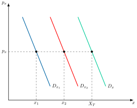
3.7 Conclusiones 30"
Como conclusión, la teoría neoclásica ha construido una teoría de la demanda que constituye un punto de referencia para análisis posteriores.
Sin embargo, este enfoque recibe algunas críticas, cada una de las cuales ha dado lugar a desarrollos posteriores que tratan de superarla:
No considera la existencia de incertidumbre, un problema abordado por el análisis del consumo en un contexto de incertidumbre.
Se basa en una función de utilidad que es subjetiva y no observable, limitación que superan tanto la teoría de la preferencia revelada como la teoría de la dualidad, ambas con base empírica.
Trata los bienes como bloques homogéneos, sin descomponerlos en sus características, lo que no explica fenómenos como la fidelidad de marca, el lanzamiento de nuevos productos o la publicidad. Esta limitación la aborda la demanda de características de Lancaster (1966).
Trata el consumo como un acto instantáneo, sin coste de oportunidad del tiempo empleado en consumir. Esta limitación la aborda la función de producción de los hogares de Becker (1965).
Apéndice
3.A.1. Enfoque cardinal de la teoría neoclásica
Los supuestos de este enfoque son que la utilidad es medible en unidades monetarias –y por tanto comparable entre individuos–, que es creciente, que la utilidad marginal de cada bien es decreciente (primera ley de Gossen) y que la utilidad marginal del dinero es constante, al tomarse como unidad de medida,\(u'\left(M\right)=1\). Resolviendo el lagrangiano \[\mathcal{L}=u\left(x_{1}\right)+u\left(x_{2}\right)+u\left(M\right)-\lambda\cdot\left(p_{1}x_{1}+p_{2}x_{2}+M-Y\right)\] se obtiene \[\dfrac{u'\left(x_{1}\right)}{p_{1}}=\dfrac{u'\left(x_{2}\right)}{p_{2}}=\lambda=u'\left(M\right)=1\] de donde\(u'\left(x_{i}\right)=p_{i}\): el consumidor demanda cada bien hasta que su utilidad marginal iguala el precio, con lo que la demanda depende únicamente de su propio precio,\(x_{i}=x\left(p_{i}\right)\).
Este enfoque fue superado por desarrollos posteriores por varias razones. El supuesto de utilidad marginal del dinero constante es poco realista y, al implicar\(\lambda\) constante, elimina todo efecto renta y todo efecto sustitución cruzado –salvo que la función sea aditiva y separable, no toda función aditiva y separable carece de efectos cruzados, como puede comprobarse con el contraejemplo \(U\left(x_{1},x_{2}\right)=\ln\left(x_{1}\right)+x_{2}\), que sigue siendo aditiva y separable pero genera\(x_{1}=p_{2}/p_{1}\), dependiente del precio del otro bien–. Además, sobre la cardinalidad –que solo garantiza comparar diferencias de utilidad dentro de un mismo individuo– este enfoque superpone el supuesto, adicional e independiente, de comparabilidad interpersonal de utilidades, que resulta excesivamente exigente. Por todo ello, Pareto rompe con la fusión entre marginalismo y utilitarismo bentamita –acuñando el término “ofelimidad” para distinguir la utilidad estrictamente individual y subjetiva de cualquier agregado social– y se impone el enfoque ordinal desarrollado en el cuerpo del tema.
3.A.2. Tipos de función de utilidad
En cuanto a la forma de las curvas, esta estará en función de los diferentes tipos de utilidad que puedan darse, y nos dará información sobre los bienes:
Función Cobb–Douglas: aquella que cumple con todas las características mencionadas previamente y las más típicas \[U\left(X_{1},X_{2}\right)=A\cdot X^{\alpha}_{1}\cdot X^{\beta}_{2},\quad\alpha,\beta>0\] donde \(\alpha\) y \(\beta\) son constantes positivas y la RMS \[\left|RMS\right|=\dfrac{\alpha\cdot X_{2}}{\beta\cdot X_{1}}\]
Sustitutivos perfectos: Una persona con estas preferencias estará dispuesta a renunciar a la misma cantidad de Y para conseguir una unidad más de X independientemente de cuanto esté consumiendo de X \[U\left(X_{1},X_{2}\right)=a\cdot X_{1}+b\cdot X_{2}\] donde la RMS es constante \[\left|RMS\right|=\dfrac{a}{b}\]
Complementarios perfectos: Función de coeficientes fijos tipo Leontief: \[U(X_{1},X_{2})=Min\left\{ \dfrac{X_{1}}{\alpha},\dfrac{X_{2}}{\beta}\right\}\] donde la RMS no existe y la \(UMg\) es constante.
Funciones CES (Elasticidad de Sustitución Constante) \[U=A\left(\alpha\cdot X^{\rho}_{1}+\beta X^{\rho}_{2}\right)^{\dfrac{\varepsilon}{\rho}}\] donde \(\rho\leq1\) es el parámetro de sustitución y \(\varepsilon\) es el grado de homogeneidad y \(\alpha y\beta>0\) son los parámetros que representan las preferencias relativas que el individuo tiene por los bienes. \(1/1-\rho\) es la elasticidad de sustitución, aunque dicho concepto tiene más sentido verlo en la teoría de la producción
Respecto a la RMS: \[RMS=\dfrac{\alpha}{\beta}\cdot\left(\dfrac{X_{2}}{X_{1}}\right)^{1-\rho}\]
3.A.3. Preferencias lexicográficas
El funcionamiento de las preferencias lexicográficas puede ilustrarse con la búsqueda de una palabra en un diccionario: se da prioridad absoluta a la primera letra, de modo que solo si dos palabras empiezan por "A" se atiende a la segunda letra, y solo si también coinciden se pasa a la tercera, y así sucesivamente. Ninguna palabra que empiece por "B" será nunca preferida a otra que empiece por "A", por muy larga o llamativa que sea la palabra con "B".
Las preferencias lexicográficas en la teoría del consumidor funcionan exactamente igual: Un consumidor con preferencias lexicográficas sobre dos bienes (por ejemplo, Bien 1 y Bien 2) siempre priorizará absolutamente la cantidad del Bien 1. Solo si dos cestas de bienes tienen la misma cantidad del Bien 1, entonces el consumidor se fijará en la cantidad del Bien 2 para decidir cuál prefiere.
Ejemplo intuitivo:
Cesta A: (5 unidades de Bien 1, 10 unidades de Bien 2)
Cesta B: (4 unidades de Bien 1, 1000 unidades de Bien 2)
Un consumidor con preferencias lexicográficas siempre preferirá la Cesta A a la Cesta B, sin importar que la Cesta B tenga muchísimo más del Bien 2. La cantidad de Bien 1 (5 vs 4) decide la preferencia de inmediato. La enorme cantidad de Bien 2 en la Cesta B es completamente irrelevante una vez que el Bien 1 ha sido evaluado y es diferente.
Únicamente si las cantidades del Bien 1 coincidieran, por ejemplo:
Cesta C: (5 unidades de Bien 1, 1 unidad de Bien 2)
Cesta D: (5 unidades de Bien 1, 2 unidades de Bien 2) Entonces el consumidor preferiría la Cesta D, porque las cantidades de Bien 1 son iguales, y la Cesta D tiene más del Bien 2.
Su papel en la teoría de la demanda del consumidor
El papel de las preferencias lexicográficas en la teoría de la demanda es principalmente ilustrativo y de contraste, más que de uso común para modelar el comportamiento real:
Rompen la "continuidad": La principal razón por la que son problemáticas es que no son continuas. Esto significa que no es posible introducir cambios infinitesimales en la cantidad de un bien esperando una respuesta "suave" en las preferencias. Siempre hay un salto abrupto en la preferencia al cambiar la cantidad del bien más prioritario.
No se pueden representar con una función de utilidad continua: Debido a esa falta de continuidad, no es posible construir una función de utilidad matemática "tradicional" y continua que represente estas preferencias. Esto es un gran problema para la teoría, ya que la mayor parte de las herramientas habituales (derivadas, optimización) requieren funciones continuas.
No hay curvas de indiferencia "suaves": En un gráfico, las curvas de indiferencia de preferencias lexicográficas no son las curvas suaves habituales en el resto de la teoría. Serían puntos o líneas muy extrañas que no permiten la convexidad habitual.
No es posible la optimización estándar: La teoría de la demanda del consumidor busca un punto óptimo donde la Tasa Marginal de Sustitución (TMS) sea igual a la relación de precios (el punto de tangencia de la curva de indiferencia con la recta presupuestaria). Con preferencias lexicográficas, no hay una TMS bien definida ni un punto de tangencia único y estable, lo que hace que los métodos de optimización estándar fallen.
Excepción teórica: Aunque son una rareza matemática y no se usan para modelar el comportamiento de la mayoría de los bienes, se estudian para mostrar la importancia de los supuestos subyacentes a la teoría del consumidor, como la continuidad y la convexidad. Son un buen ejemplo de un tipo de preferencia "irracional" o "extrema" que no puede ser manejada por las herramientas estándar.
El interés de las preferencias lexicográficas para la teoría de la demanda no reside en su realismo descriptivo, sino en delimitar con precisión qué axioma resulta realmente indispensable para garantizar la existencia de una función de utilidad: satisfacen completitud, transitividad y reflexividad –los axiomas del pre-orden completo– y, sin embargo, no admiten ninguna función de utilidad que las represente, precisamente porque fallan en continuidad. Aunque en la vida real las preferencias lexicográficas puras son raras (porque casi siempre existe disposición a sacrificar algo de una cosa por mucha de otra), pueden identificarse situaciones que se aproximan a este comportamiento, especialmente cuando existe una prioridad absoluta por un factor concreto39, y constituyen así el contraejemplo canónico que confirma, por la vía negativa, la necesidad del Axioma 4 dentro del Teorema de Debreu: sin continuidad, ni la racionalidad del consumidor ni la posibilidad de ordenar sus cestas bastan para construir el aparato analítico –derivadas, curvas de indiferencia, condiciones de tangencia– sobre el que se apoya el resto de la teoría de la demanda.
3.A.4. Teoría de la preferencia revelada
La teoría de la preferencia revelada fue desarrollada por Samuelson (1938). Si bien la teoría neoclásica de la demanda tiene un enfoque completamente deductivo –partiendo de unos supuestos se construye una teoría que permite realizar predicciones sobre el comportamiento del consumidor–, la teoría de la preferencia revelada tendrá un enfoque completamente inductivo –partiendo de la observación del comportamiento del consumidor, deduzco la naturaleza de las preferencias–.
El gran valor añadido que tiene esta teoría es que permite realizar las mismas predicciones acerca del comportamiento de los consumidores con unos supuestos muchos menos restrictivos.
Concretamente, la teoría de la preferencia revelada se basa en los siguientes supuestos:
Ante un vector de precios p y una dotación de renta m, el consumidor gasta toda su renta en la compra de bienes y servicios
Solo una cesta de bienes x es escogida para cada nivel de renta y precios, es decir, solo hay una cesta óptima en cada ocasión.
Solo existe un vector de precios p y una dotación monetaria m en donde cada cesta óptima es escogida, es decir, no puede haber una cesta óptima que sea escogida en distintas ocasiones.
Las preferencias del consumidor son consistentes, quedando reflejado en los dos axiomas de la preferencia revelada.
Axioma débil de preferencia revelada
El axioma débil de preferencia revelada establece que si el nivel de precios \(p_{0}\) un consumidor elige la cesta \(x_{0}\) estando también disponible la cesta \(x_{1}\), entonces cuando el consumidor elige la cesta \(x_{1}\) es porque se ha producido un cambio de precios y a este nuevo nivel, \(p_{1}\), \(x_{0}\) ya no está disponible. Es decir, si \(x_{1}\) era asequible a los precios \(p_{0}\) y aun así se eligió \(x_{0}\), entonces \(x_{0}\) no puede ser asequible a los precios \(p_{1}\) cuando se elige \(x_{1}\) \[p_{0}\cdot x_{1}\leq p_{0}\cdot x_{0}\Rightarrow p_{1}\cdot x_{0}>p_{1}\cdot x_{1} \tag{3.23}\]
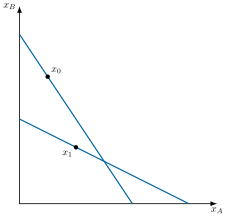
Axioma fuerte de preferencia revelada
El axioma fuerte de preferencia revelada impone la transitividad de las preferencias. Por lo tanto, cambios consecutivos en los precios permite establecer un orden en la deseabilidad de las cestas en función de las cestas que estuvieran disponibles a cada nivel de precios y la cesta óptima finalmente elegida en cada uno de estos.
Dadas tres cestas de bienes, \(x_{0}\), \(x_{1}\) y \(x_{2}\), no comparables entre sí a un mismo nivel de precios, se puede establecer un orden de preferencia mediante la relación indirecta de preferencia revelada entre las distintas cestas.
Si \(x_{0}\) se revela preferida a \(x_{1}\), \(x_{1}\) se revela preferida a \(x_{2}\), entonces el orden de preferencias es \(x_{0}>x_{1}>x_{2}\).
Este no es más que una versión más fuerte del axioma previo, que refuerza la consistencia y la transitividad de las preferencias reveladas.
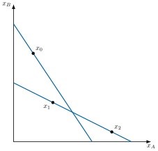
Aplicaciones: efecto renta y efecto sustitución
Por otro lado, la teoría de la preferencia revelada puede ser utilizada para descomponer los efectos que produce una variación de precios sobre la demanda del consumidor.
La teoría de la preferencia revelada no se podrá apoyar sobre las curvas de indiferencia para calcular la variación compensatoria y así hallar el efecto sustitución en términos de Hicks. En su lugar se servirá de la definición de Slutsky de renta real: la compensación de renta se calcula desplazando la recta presupuestaria, a los nuevos precios, hasta que la cesta inicial vuelva a estar disponible.
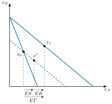
A través de este cálculo se hallará la cesta inicial, \(x_{0}\), la cesta final, \(x_{1}\), y la cesta intermedia \(x^{*}\).
Esta cesta intermedia podría ubicarse a la izquierda de la cesta inicial \(x_{0}\), a la derecha o ser exactamente igual que \(x_{0}\).
No obstante, el axioma débil de preferencia revelada establece que a la izquierda no puede encontrarse ya que esa cesta ya estaba disponible al nivel de precios inicial y, sin embargo, no era elegida.
Por su parte, \(x_{0}\) tampoco puede ser la cesta intermedia, ya que una misma cesta no puede ser óptima para dos niveles de precios distintos. Por lo tanto, \(x^{*}\) se encuentra necesariamente a la derecha de \(x_{0}\).
Así, el efecto sustitución, al igual que en el modelo neoclásico, tiene un efecto opuesto a la dirección a la que se mueve el precio. Como el precio cae, se demanda más del bien que se ha abaratado.
De esta forma, \(x^{*}-x_{0}\) representa el efecto sustitución, \(x_{1}-x^{*}\) representa el efecto renta y \(x_{1}-x_{0}\) representa el efecto total.
Conclusión
En conclusión, la teoría de la preferencia revelada de Samuelson es completamente equivalente a la teoría neoclásica de la demanda de consumo, ya que todas las predicciones realizadas por la segunda también son realizadas por la primera.
Por lo tanto, un consumidor que satisfaga los supuestos relativamente poco restrictivos de la teoría de la preferencia revelada se comportará como si tuviera unas preferencias que satisfagan la teoría neoclásica del consumidor.
En definitiva, esto otorga una mayor robustez a la teoría neoclásica, ya que sigue siendo válida con unos supuestos mucho más laxos.
3.A.5. Métodos de los precios hedónicos
Los precios hedónicos son un concepto y un método económico que se utiliza para estimar el valor de las diferentes características o atributos que componen un bien o servicio, especialmente aquellos que son heterogéneos y cuyas características no se venden por separado en el mercado.
La idea fundamental es que el precio de un bien no es un todo monolítico, sino más bien la suma de los valores implícitos de sus características individuales. Se asume que los consumidores valoran las características de un bien más que el bien en sí mismo.
Para entenderlo mejor, pensemos en una vivienda: el precio de una casa no se basa solo en "ser una casa". Influyen multitud de atributos:
Características estructurales: número de habitaciones, baños, metros cuadrados construidos, antigüedad, tipo de construcción, calidad de los materiales.
Características de ubicación: cercanía a servicios (escuelas, hospitales, transporte público), seguridad del barrio, calidad del vecindario.
Características ambientales o de calidad de vida: cercanía a parques, vistas (al mar, a la montaña), nivel de ruido, calidad del aire.
El método de precios hedónicos busca descomponer el precio total del bien para asignar un "precio implícito" a cada una de estas características. Para calcularlo se utilizan modelos econométricos, generalmente regresiones multivariables. La idea es establecer una relación matemática entre el precio del bien (variable dependiente) y sus múltiples características (variables independientes).
De esta forma, los precios hedónicos tienen diversas aplicaciones, entre las más importantes:
Valoración de bienes y servicios no comercializables directamente en el mercado: Es especialmente útil para estimar el valor de bienes ambientales (calidad del aire, acceso a espacios verdes, paisajes) o servicios públicos, que no tienen un precio de mercado explícito, pero influyen en el precio de otros bienes (como la vivienda).
Ajuste de calidad en índices de precios: Permiten ajustar los índices de precios (como el Índice de Precios al Consumo o el Índice de Precios de Vivienda) por cambios en la calidad de los bienes. Si un producto sube de precio porque incorpora mejores características, el método hedónico puede diferenciar si la subida es por calidad (no es inflación "pura") o por una subida de precio real.
Análisis del mercado inmobiliario: Para entender cómo diferentes atributos de una propiedad (tamaño, ubicación, número de habitaciones, etc.) afectan su precio y cómo valoran los compradores esas características.
Evaluación de políticas públicas: Permiten evaluar el impacto económico de ciertas políticas (ej. mejoras en la calidad ambiental de un área) al observar cómo estas influyen en el valor de las propiedades cercanas.
Marketing y diseño de productos: Ayudan a las empresas a entender qué características son más valoradas por los consumidores para optimizar el diseño de sus productos y estrategias de precios.
El método de precios hedónicos conecta directamente con el equilibrio del consumidor desarrollado en el cuerpo del tema: los precios implícitos estimados para cada característica no son más que una aproximación empírica a las utilidades marginales relativas que, en el óptimo, determinan la relación marginal de sustitución entre atributos –la misma condición de tangencia que arroja la maximización de la utilidad sujeta a la restricción presupuestaria (Apéndice, 3.A.7)–. De ahí que la regresión hedónica pueda leerse como el correlato econométrico de la teoría ordinal de la demanda: mientras esta explica en qué condiciones se alcanza el equilibrio, el método hedónico permite recuperar empíricamente los precios sombra que ese equilibrio revela cuando el bien en cuestión no se transa por separado en el mercado.
3.A.6. La función de producción de los hogares de Becker
Gary Becker (1965) propone un enfoque distinto del consumidor: los bienes de mercado no reportan utilidad por sí mismos, sino que son insumos que el hogar combina con tiempo para producir los verdaderos bienes que generan satisfacción –de forma análoga a como una empresa combina factores para producir un output–.
Formalmente, el consumidor obtiene utilidad de una serie de bienes producidos en el hogar, \(Z_{i}\), cada uno obtenido mediante una función de producción doméstica que combina un bien de mercado,\(x_{i}\), y el tiempo dedicado a él,\(t_{i}\): \[Z_{i}=f_{i}\left(x_{i},t_{i}\right),\qquad U=U\left(Z_{1},\ldots,Z_{n}\right)\]
El consumidor maximiza esta utilidad sujeto a dos restricciones, no solo una: la restricción monetaria habitual y una restricción de tiempo, dado que el tiempo total disponible,\(T\), se reparte entre tiempo de trabajo,\(t_{w}\), y tiempo dedicado a la producción doméstica: \[\sum_{i}p_{i}x_{i}=w\cdot t_{w}+V,\qquad\sum_{i}t_{i}+t_{w}=T\]
Combinando ambas restricciones –sustituyendo \(t_{w}\)– se obtiene una única restricción de “renta completa”: \[\sum_{i}\left(p_{i}x_{i}+w\cdot t_{i}\right)=w\cdot T+V\] donde \(w\cdot T+V\) es la renta completa: el dinero disponible más el valor del tiempo total, valorado al salario.
De esta restricción combinada se deduce que el precio efectivo –o precio sombra– de cada bien producido en el hogar no es solo su precio de mercado, sino que incluye también el coste de oportunidad del tiempo empleado en producirlo, ligado al salario \(w\). Esto explica, por ejemplo, por qué los individuos con salarios más altos sustituyen tiempo por bienes de mercado –comida precocinada en vez de cocinar, tintorería en vez de lavar en casa–: cuanto mayor es \(w\), más caro resulta, en términos de renta completa, el tiempo empleado en cualquier actividad.
Este enfoque, en la misma línea crítica que la demanda de características de Lancaster, supera la limitación neoclásica de tratar el consumo como un acto instantáneo sin coste de oportunidad temporal, y ha sido la base de desarrollos posteriores en la economía de la familia, la oferta de trabajo y la economía del tiempo.
A escala agregada, este enfoque tiene implicaciones macroeconómicas relevantes: al encarecerse el tiempo con el salario, un aumento salarial no solo desplaza la oferta de trabajo –vía el efecto sustitución habitual entre ocio y trabajo–, sino que también reasigna el tiempo dentro del propio hogar hacia actividades que requieren menos tiempo relativo, lo que ayuda a explicar la caída histórica del tiempo dedicado a la producción doméstica y el auge paralelo de sectores de mercado que sustituyen esa producción –restauración, guarderías, servicios domésticos–. Esta reasignación del tiempo del hogar hacia el mercado es, de hecho, una de las explicaciones citadas para el aumento sostenido de la participación laboral femenina en las economías desarrolladas durante la segunda mitad del siglo XX.
Esto conecta directamente con un problema de medición: el PIB solo contabiliza la producción que pasa por el mercado, de modo que toda la producción doméstica –cuidado de hijos, limpieza, cocina– queda completamente fuera de las cuentas nacionales, pese a generar un valor económico real. Nordhaus y Tobin (1972) fueron pioneros al proponer una Medida del Bienestar Económico (MEW) que ajustaba el PIB incorporando el valor del ocio y del trabajo no remunerado, aplicando precisamente la lógica de Becker. Trabajos más recientes, como el de Landefeld et al. (2009), han construido cuentas satélite oficiales de la producción doméstica en Estados Unidos: incorporarla elevaría el PIB medido convencionalmente en torno a una cuarta parte –con una tendencia decreciente desde cerca del 40% en 1965, a medida que más mujeres se incorporaban al mercado laboral–. Estas estimaciones tienen implicaciones de política evidentes: decisiones como la fiscalidad de los servicios domésticos, la provisión pública de cuidados o las comparaciones internacionales de bienestar dependen críticamente de si se tiene en cuenta, o no, esta producción invisible para el PIB.
3.A.7. El problema de maximización de la utilidad mediante el método de Lagrange
El problema de maximización de la utilidad presentado en el epígrafe “Equilibrio del consumidor” admite dos vías de resolución equivalentes: despejar la restricción presupuestaria para una de las variables y sustituirla directamente en la función de utilidad, o recurrir al método de los multiplicadores de Lagrange, más general y aplicable incluso cuando la restricción no admite un despeje explícito para ninguna de las variables. A continuación se desarrolla esta segunda vía paso a paso, siguiendo la misma lógica –plantear primero el problema, formalizar después el multiplicador y solo al final interpretarlo– con la que suele presentarse este método en los manuales de optimización estática40.
Por la monotonía de las preferencias (Axioma 6), que implica la no saciedad local, el consumidor agota siempre su renta, de modo que la restricción presupuestaria de la desigualdad \(p_{x}\cdot x+p_{y}\cdot y\leq m\) se convierte, en el óptimo, en una igualdad. El problema puede escribirse entonces como \[\max_{x,y}\quad u\left(x,y\right)\quad\text{sujeto a}\quad p_{x}\cdot x+p_{y}\cdot y=m.\] El primer paso del método de Lagrange consiste en escribir la restricción con un cero en un lado de la igualdad y construir el Lagrangiano sumando al objetivo el multiplicador, \(\lambda\), multiplicado por dicha expresión \[\mathcal{L}\left(x,y,\lambda\right)=u\left(x,y\right)-\lambda\left(p_{x}\cdot x+p_{y}\cdot y-m\right).\]
El segundo paso consiste en derivar el Lagrangiano respecto a cada una de las variables de elección y respecto al propio multiplicador, e igualar cada derivada a cero \[\begin{align*} \dfrac{\partial\mathcal{L}}{\partial x} & =UMg_{x}-\lambda\cdot p_{x}=0,\\ \dfrac{\partial\mathcal{L}}{\partial y} & =UMg_{y}-\lambda\cdot p_{y}=0,\\ \dfrac{\partial\mathcal{L}}{\partial\lambda} & =-\left(p_{x}\cdot x+p_{y}\cdot y-m\right)=0. \end{align*}\] La última condición no es más que la restricción presupuestaria original. De las dos primeras se despeja directamente \[\lambda=\dfrac{UMg_{x}}{p_{x}}=\dfrac{UMg_{y}}{p_{y}},\] la misma condición ya avanzada en el cuerpo del tema, y dividiendo una entre otra se obtiene \[\dfrac{UMg_{x}}{UMg_{y}}=\dfrac{p_{x}}{p_{y}}\Leftrightarrow RMS_{x,y}=\dfrac{p_{x}}{p_{y}},\] la condición de tangencia entre la curva de indiferencia y la recta de balance: el consumidor deja de reajustar su cesta cuando la tasa a la que está dispuesto a sustituir un bien por otro coincide con la tasa a la que el mercado le permite hacerlo.41
Queda por precisar qué representa exactamente el multiplicador \(\lambda\). Supóngase que el consumidor se encuentra en la cesta óptima y que su renta aumenta en una cantidad infinitesimal, \(dm\). Si esa renta adicional se dedicase íntegramente al bien \(x\), permitiría comprar \(dm/p_{x}\) unidades adicionales de dicho bien, lo que elevaría la utilidad en \(UMg_{x}\cdot dm/p_{x}\). Por la primera condición de primer orden, \(UMg_{x}=\lambda\cdot p_{x}\), de modo que ese incremento de utilidad es exactamente \(\lambda\cdot dm\) –y el mismo resultado se obtendría si la renta adicional se dedicase al bien \(y\), precisamente porque en el óptimo las utilidades marginales ponderadas por el precio están igualadas entre todos los bienes–. Cada unidad adicional de renta reporta, por tanto, \(\lambda\) unidades de utilidad, con independencia de en qué bien se gaste: \(\lambda\) es el precio sombra de la restricción presupuestaria, la tasa a la que se relaja el máximo de utilidad alcanzable cuando se relaja la restricción de renta, es decir, la utilidad marginal de la renta ya avanzada en el cuerpo del tema.
Por último, las condiciones de primer orden anteriores son necesarias, pero no bastarían por sí solas para garantizar que la cesta hallada sea un máximo si no fuera por los axiomas de deseabilidad (Axiomas 5 a 7), que garantizan que la función de utilidad es estrictamente cuasicóncava y dos veces diferenciable. En un problema de maximización de una función estrictamente cuasicóncava sujeta a una restricción lineal, dichas condiciones de primer orden identifican un único máximo global, sin necesidad de comprobar punto por punto el hessiano orlado (Mas-Colell et al. 1995). De este modo, la derivación completa por el método de Lagrange confirma, paso a paso, la condición de equilibrio ya avanzada en el cuerpo del tema.
Términos del glosario de este tema
47 términos · ver el glosario completo
Bibliografía
La utilidad se define como la capacidad de los bienes para satisfacer necesidades y se implanta en la teoría económica a partir de la primera Revolución Marginalista.↩︎
En 1738, Daniel Bernoulli recurrió por primera vez de forma rigurosa a la utilidad marginal decreciente para resolver la paradoja de San Petersburgo, un juego con valor esperado monetario infinito por el que, sin embargo, ningún individuo estaría dispuesto a pagar una cantidad elevada. Bernoulli mostró que si la utilidad del dinero es cóncava –marginalmente decreciente–, el valor esperado de la utilidad del juego es finito, anticipando en más de un siglo el concepto de utilidad marginal que formalizaría la Revolución Marginalista.↩︎
En 1854, Gossen formuló sus tres leyes, que han tenido una gran relevancia en el desarrollo de la Teoría de Demanda:
Ley de saturación de necesidades: “la utilidad de un bien disminuye conforme aumenta la cantidad disponible de este bien, hasta llegar a la saciedad”. Es decir, Umg decreciente.
Ley de igualdad de las \(UMg\) ponderadas: una persona distribuye su renta entre los bienes de modo que la última unidad monetaria gastada en cada uno le reporte la misma utilidad marginal. Es decir, en el óptimo, las \(UMg\) ponderadas por su precio se igualan.
Ley de la escasez como condición previa al valor económico, lo que implica la existencia de un problema económico y, por tanto, la posibilidad de optimización de los recursos.
El análisis de la Teoría NC de la Demanda se basa en:
El individualismo metodológico, es decir, en el examen del comportamiento del individuo (consumidor).
Un concepto subjetivo de utilidad.
Racionalidad: dados precios y renta, el individuo planifica su gasto de manera que haga máxima su satisfacción (autores como Khaneman y Tversky o Richard Thaler considerarán irracionalidad de las decisiones). - Información completa: contexto de certidumbre.
Si la utilidad marginal del dinero es constante, la última unidad monetaria reporta la misma utilidad independientemente de la cantidad que se posea. Por ejemplo, no es lo mismo recibir una unidad monetaria con una renta de 10 que recibir dicha unidad con una renta de 10000.↩︎
Un conjunto se define como convexo si, para cada par de sus puntos, cada punto sobre el segmento que los une está recubierta por el conjunto. Un conjunto es convexo si se puede ir de un punto a otro el línea recta sin salir del mismo. Si dos planes de consumo son posibles, también lo será cualquier plan formado a partir del promedio ponderado. Este supuesto implica perfecta divisibilidad de los bienes.
Así, un conjunto es convexo cuando cualquier combinación lineal de dos puntos pertenecientes al mismo está también incluida en el conjunto.↩︎
Con limitar la discrecionalidad de las preferencias se hace referencia a no escoger una muestra demasiado amplia sino limitada para que sea operativa y de buen comportamiento↩︎
La intuición es que el consumidor nunca se queda sin saber qué prefiere: ante dos cestas cualesquiera, siempre puede decir cuál le gusta más o que le son indiferentes. Si se cumplen las dos relaciones a la vez, es indiferente entre ambas.↩︎
El orden lexicográfico compara los componentes de un conjunto uno a uno y ordena los elementos de acuerdo al primer elemento diferente que encontramos. No es posible dibujar curvas de indiferencia. Proporcionan un preorden, no un orden completo. Cumple con completitud, reflexividad, transitividad, y monotonía, pero no se puede construir ninguna función de utilidad, porque es necesario la propiedad de continuidad.
Para saber más, acudir al anexo.↩︎
La continuidad descarta preferencias como las lexicográficas (Apéndice, 3.A.3), que cumplen completitud, reflexividad y transitividad pero no continuidad, y por ello no admiten ninguna función de utilidad. No debe confundirse con la diferenciabilidad (Axioma 7): la continuidad garantiza que exista una función de utilidad, no que esta sea derivable en todo punto –una función tipo Leontief, por ejemplo, es continua pero presenta un vértice donde la RMS no está definida.↩︎
La monotonía es la versión fuerte de un supuesto más general de deseabilidad, cuya versión más débil es la no saciedad local (véase la subsección “Curvas de indiferencia”): esta solo exige que, en cualquier punto, exista alguna cesta cercana estrictamente mejor –no que “más de todo” sea siempre mejor–. La monotonía implica no saciedad local, pero no al revés.↩︎
A diferencia de la continuidad, que solo exige ausencia de saltos, la diferenciabilidad exige además ausencia de vértices: una función continua puede tener puntos angulares –como la tipo Leontief– donde la pendiente cambia bruscamente, mientras que una función diferenciable tiene pendiente única y bien definida en todo punto, lo que permite aplicar el cálculo diferencial (utilidades marginales, RMS, condiciones de primer orden) sin excepciones.↩︎
En matemáticas, el "buen comportamiento" quiere decir también que no se está violando ninguna premisa necesaria para la aplicación satisfactoria de cualquiera que sea el análisis que esté en discusión.↩︎
\(u\) es una función del conjunto de bienes, \(X\), para los reales (números reales \(\mathbb{R}\)) tal que, \(/\), el bien \(x\) es al menos tan bueno como el bien \(y\), \(x\succsim y\), si y solo si, \(\Leftrightarrow\), esto tiene una traslación en términos de utilidad, \(u\left(x\right)\geq u\left(y\right)\).↩︎
Aclaración entre ordenación e ITM+, concepto que suele aparecer:
La ordenación es la idea principal: la función de utilidad solo nos dice si una cesta de bienes es mejor, peor o igual que otra. Por ejemplo, "me gusta más la pizza que la hamburguesa".
La propiedad de independencia de transformaciones monótonas positivas es la confirmación matemática de esto. Significa que los números que asignamos a esas preferencias no importan, solo su orden. Si le asigno un valor de 10 a la pizza y 5 a la hamburguesa, el hecho de que la pizza me guste más no cambia si en su lugar les asigno valores de 100 y 50. Lo que importa es que 100 es mayor que 50.
Es decir, que dada una cesta que reporta mayor utilidad que otra, cualquier combinación lineal de ambas reportará más utilidad que la que menos utilidad aporte. Esta propiedad nos permite establecer que la maximización de U(x) es equivalente a elegir la cesta que reporta más utilidad. Es cuasicóncava y no cóncava porque las transformaciones monótonas positivas preservan la ordenación de preferencias pero alteran la forma.↩︎
Las combinaciones que son preferidas o indiferentes forman parte de un conjunto convexo↩︎
Por la monotonía evitamos que haya males y que el individuo llegue a saturarse de algún bien.↩︎
La intuición es que la RMS mide cuánto de un bien está dispuesto a entregar el consumidor a cambio de una unidad más del otro sin quedar ni mejor ni peor. Es una valoración subjetiva, a diferencia de la relación de precios, que es la tasa a la que el mercado permite intercambiar los bienes. Por ejemplo, si el consumidor está dispuesto a renunciar a dos cafés por un té más, su RMS entre té y café es dos.↩︎
La intuición es que \(\sigma\) mide lo fácil que resulta sustituir un bien por otro. Si es alta, un pequeño cambio en la valoración relativa de los bienes lleva a cambiar mucho la proporción en que se consumen, y en el caso extremo de los sustitutivos perfectos \(\sigma\) es infinita. Si es nula, la proporción no cambia en absoluto, como ocurre con los complementarios perfectos.↩︎
Otros casos (levantamiento de supuestos)
Bienes neutrales: Su consumo le es indiferente al individuo. Por ello las curvas de indiferencia son rectas verticales u horizontales según qué bien sea neutro.
Males: Las curvas de indiferencia tendrán pendiente positiva y serán crecientes. La utilidad crecerá hacia el eje de abscisas u ordenadas dependiendo de que bien sea el mal.
Curvas de indiferencia cóncavas: La RMS es creciente al aumentar X (dados los bienes X e Y). Estas curvas de indiferencia no implican que los bienes sean males, únicamente rompen el supuesto de convexidad, es decir la preferencia por la variedad. Para saber analíticamente si un bien es un mal, calculamos la \(UMg\) (primera derivada) del bien y si es negativa es un mal.
Esto se debe a que al ser la \(RMS\) constante el valor de \(\partial RMS_{x,y}\) en la ecuación 3.5 es 0, por lo tanto el valor de \(\sigma\) es \(\infty\).↩︎
En el segmento horizontal, la \(RMS\) es cero, ya que no hay disposición a sustituir un bien por el otro. En el segmento vertical, la \(RMS\) es infinita. Finalmente, en el vértice —el punto clave de consumo óptimo— la \(RMS\) es indefinida, dado el quiebre de la curva. Esto subraya la imposibilidad de sustitución entre los bienes, ya que solo aumentan la utilidad en una proporción fija.
Así, en el caso de una función de utilidad tipo Leontief, el consumo solo tiene sentido en su vértice.↩︎
En los extremos la cantidad consumida del otro bien es cero. En el caso de \(\dfrac{m}{p_{x}}\), viene de que el consumo de \(y\) es 0, por lo que \(m=p_{x}\cdot x\) entonces \(x=\dfrac{m}{p_{x}}\) y lo mismo aplica en el extremo de solo consumir el bien \(y\).↩︎
Coste de oportunidad al reducir la cantidad de \(y\) que puede obtenerse al reducir la cantidad de \(x\) en una unidad y suponiendo que los precios están dados. Este coste de oportunidad será constante.↩︎
Debido a la no saciedad local, el símbolo de desigualdad, \(\leq\), de la restricción presupuestaria pasa a ser una igualdad, =, a la hora de resolver el Lagrangiano.
Así, la desigualdad de la restricción (\(\le\)) se convierte en una igualdad (=) porque, por el principio de no saciedad, el consumidor siempre gasta todo su ingreso para obtener la máxima satisfacción. La solución a este problema, usando el método de Lagrange, nos da la condición clave de equilibrio: la Relación Marginal de Sustitución (RMS) debe ser igual a la relación de precios. Esto significa que la valoración subjetiva del consumidor se alinea perfectamente con la valoración objetiva del mercado.↩︎
La condición que proporciona la solución (elección del consumidor) viene dada por la igualación entre las \(UMg\) ponderadas por el precio de cada bien y la igualación de todas ellas al multiplicador de Lagrange. El consumidor distribuye toda su renta entre los diferentes bienes hasta que las \(UMg\) ponderadas por el precio se igualan (Segunda Ley de Gossen).
Siendo \(\lambda\) el multiplicador de Lagrange (precio sombra de la restricción) que, en este caso, representa la \(UMg\) de la renta, es decir, lo que aumenta la utilidad máxima al aumentar la renta en una unidad. A diferencia del enfoque cardinal, \(\lambda\) no es constante: depende de los precios y de la renta.↩︎
Curiosidad:
Si \(RMS>P_{1}/P_{2}\), gráficamente la pendiente de la curva de indiferencia es superior a la de la recta de balance,la valoración subjetiva del consumidor del bien 1 (\(RMS\)) será superior a la valoración objetiva (precio relativo) de dicho bien. Por tanto, el consumidor aumentará su utilidad sustituyendo unidades del bien 2 por unidades del bien 1.
Si \(RMS<P_{1}/P_{2}\), ocurrirá lo contrario, donde la pendiente de la curva de indiferencia es inferior a la de la recta de balance
El consumidor continuará reajustando su consumo hasta que su \(RMS\) sea exactamente igual al precio relativo, \(RMS=P_{1}/P_{2}\) , momento en el que alcanza su punto de consumo óptimo y no tiene incentivo para realizar más sustituciones. Gráficamente, la pendiente de la curva de indiferencia y la pendiente de la recta de balance serán iguales.↩︎
El coste de oportunidad y el precio relativo (valoración objetiva) pueden divergir cuando no se cumplen las condiciones ideales del mercado. Esto sucede, por ejemplo:
En mercados imperfectos: Si hay monopolios u oligopolios, los precios no reflejan el coste de producción, alterando el verdadero coste de oportunidad.
En mercados con bienes no transables: Si un bien no se puede comprar o vender, su coste de oportunidad es subjetivo y no está dictado por un precio de mercado.
Con información asimétrica: Si los precios no reflejan toda la información disponible, el coste de oportunidad percibido por un consumidor puede diferir del coste real.
En la teoría neoclásica, sin embargo, se asume un mercado ideal donde el precio relativo es el coste de oportunidad, lo que simplifica el modelo para entender la elección racional del consumidor.↩︎
Gorman, W. M. (1953), “Community Preference Fields”,Econometrica, 21(1), pp. 63-80. También conocida como forma polar de Gorman (Gorman polar form), desarrollada en Gorman (1961),Metroeconomica.↩︎
El objetivo será determinar si la teoría neoclásica de la demanda nos permite identificar regularidades robustas (que se cumplan bajo cualquier circunstancia: “leyes de demanda”) y poder así derivar la curva de demanda. Desgraciadamente, veremos que la teoría neoclásica de la demanda no ofrece muchas regularidades robustas pero si algunas que comentamos a continuación↩︎
La intuición es que, cuando un bien se abarata, conviene sustituir otros bienes por él, y cuando se encarece, conviene sustituirlo por otros. Por eso este efecto siempre va en sentido contrario a la variación del precio. Por ejemplo, si baja el precio del café, el café sale más barato en comparación con el té, y el consumidor tiende a tomar más café y menos té.↩︎
La intuición es que una bajada de precios hace al consumidor más rico sin que gane más dinero, y una subida lo hace más pobre. Cómo reacciona a ese cambio depende del bien: si es normal, comprará más al enriquecerse, y si es inferior, comprará menos. Siguiendo el ejemplo, al bajar el precio del café al consumidor le sobra dinero, y si el café es un bien normal tomará todavía más café.↩︎
En ese sentido, su signo es contrario al de la variación del precio↩︎
Caso excepcional de los bienes Giffen: si un bien es inferior y absorbe una gran parte de la renta, un aumento de su precio puede hacer subir su demanda. Esto ocurre porque el encarecimiento empobrece tanto al consumidor que este se ve obligado a renunciar a otros bienes más caros, comprando aún más del bien barato para poder subsistir –el efecto renta, positivo por tratarse de un bien inferior, supera al efecto sustitución, siempre negativo–. El ejemplo clásico de manual –las patatas durante la hambruna irlandesa del siglo XIX, popularizado por Marshall– carece en realidad de verificación empírica sólida y ha sido cuestionado por historiadores económicos (Rosen 1999). La evidencia empírica más sólida de comportamiento Giffen real procede de Jensen y Miller (2008), que documentaron el fenómeno subsidiando el precio de alimentos básicos entre hogares muy pobres de China: evidencia fuerte para el arroz en Hunan y más débil para el trigo en Gansu. No existen “bienes Giffen” en sentido estricto, sino situaciones puntuales, verificadas empíricamente, en las que se confirma esta paradoja.↩︎
Bien Veblen: si sube el precio, sube la demanda –al contrario que un bien Giffen, aquí no hay ningún motivo de subsistencia, sino que el precio elevado forma parte del propio atractivo del bien (consumo conspicuo u ostentoso, en el sentido dado por Veblen (1899)). Se trata típicamente de bienes de lujo –relojes de alta gama, bolsos de marcas exclusivas, ciertos vinos de gama alta–, donde un precio más bajo podría incluso reducir su atractivo social. A diferencia de los bienes Giffen, que son inferiores, los bienes Veblen son bienes de lujo; ambos comparten una pendiente de demanda positiva, pero por razones opuestas.↩︎
Gráficamente, las curvas de indiferencia tienen la misma pendiente a lo largo de cualquier recta trazada desde el origen. La intuición es que el consumidor reparte su renta en las mismas proporciones sea cual sea su nivel: si su renta se duplica, compra el doble de cada bien. Un ejemplo es la función Cobb-Douglas.↩︎
La intuición es que, una vez aislado el efecto sustitución, es decir, con la utilidad constante, la relación entre dos bienes es recíproca: el efecto que una subida de un euro en el precio del café tiene sobre la demanda de té es igual al que una subida de un euro en el precio del té tiene sobre la demanda de café.↩︎
Algunos ejemplos:
La seguridad en un viaje aéreo: se elige siempre la aerolínea con menor riesgo de accidente, sin importar lo cómoda o lujosa que sea la otra.
Medicamentos y efectos secundarios: se elige siempre el medicamento con mayor probabilidad de curación, incluso si eso implica soportar efectos secundarios más desagradables.
Alimentos y alergias graves: se elige siempre el alimento del que se tiene total certeza de que no contiene el alérgeno, sin importar lo apetitoso que sea otro plato que pueda contenerlo.
Aunque es un manual de macroeconomía, la exposición del método de Lagrange en Doepke, Lehnert y Sellgren (1999) –planteando primero el problema, formalizando después el Lagrangiano y solo al final interpretando el multiplicador– resulta especialmente clara para ganar intuición antes de formalizar, por lo que se ha tomado como modelo expositivo en este apartado.↩︎
Esta derivación presupone una solución interior, es decir, que el consumidor adquiere una cantidad estrictamente positiva de ambos bienes. El supuesto de que las preferencias son asintóticas a los ejes –introducido junto con el Teorema de Debreu– garantiza precisamente esa solución interior. Cuando ese supuesto no se sostiene y puede haber soluciones de esquina, las condiciones de Lagrange se generalizan mediante las condiciones de Kuhn-Tucker, que permiten que alguna de las restricciones de no negatividad sea activa en el óptimo (Jehle y Reny 2011).↩︎